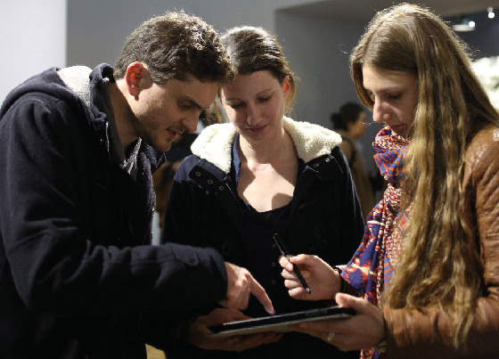
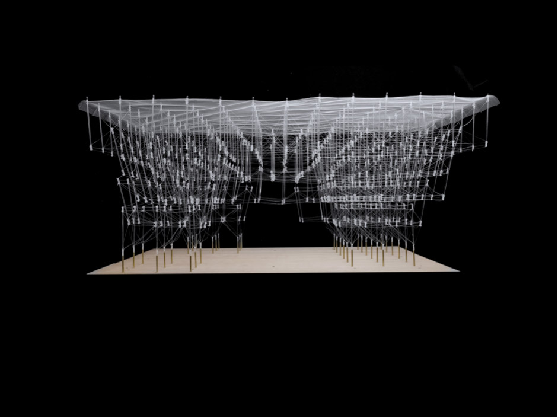

Médiation des œuvres de l'exposition Imprimer le monde
Février 2017
Pour la première année de partenariat entre le centre George Pompidou et le BTS design graphique numérique de Boulogne-Billancourt, le service de médiation du centre à demandé aux étudiants de réaliser une application de médiation d'une œuvre de l'exposition Imprimer le monde. Cette exposition interrogeait les enjeux liés à l'impression 3D et ses différentes applications.

Les étudiants sont venus présenter leurs applications pendant le vernissage de l'exposition qui a eu lieu en février 2017. Les applications ont été réalisées dans panda suite, avec la précieuse aide de Thibéry Maillard.
Harvesting Plasticity, Kevin Clement & Anders Rod, 2016.

Harvesting Plasticity est un projet d’étudiants de l’Université de Tokyo. La structure est destinée à l’origine à servir d’abri pour des marchés temporaires au Japon. Cette structure a été créée spécialement pour l’exposition.
L'application revient sur les 3 points essentiels du processus de création de la structure au travers demini-jeux à destination des visiteurs :
le recyclage, elle est faite en thermoplastique biodégradable, à partir de déchets alimentaires
sa fabrication, construite via un logiciel de guidage précis, permettant de placer ses tiges de plastique dans l’espace
son aspect participatif, dans le futur n’importe qui pourrait utiliser cette technique de fabrication et créer sa propre structure selon ses besoins.
Stranger Visions , Heather Dewey Hagborg
. Cette oeuvre est composée de visages imprimés avec la technique de l’impression 3D. L’artiste a récolté des déchets dans la rue (mégots, chewing gum) et prélevé l’ADN présent sur ces déchets dans un laboratoire. A partir des résultats de l'analyse, elle a créé des portraits robots issus du mélange de toutes ces ADN, ensuite imprimés en 3D.
L'application vise à retranscrire la démarche de l’auteur. Elle propose d'analyser (faussement) le visiteur, à travers une série de faux tests d’ADN. Suite à cette analyse, le visiteur obtient un résultat sur son profil (qui est absurde, poussé à l’extrême). Le visiteur est ensuite informé que ces résultats sont erronés et qu’il s’agit ici des limites de l’ADN. Ce qui permet d'expliquer en conclusion la démarche de l’artiste et les enjeux sociaux de l’oeuvre.